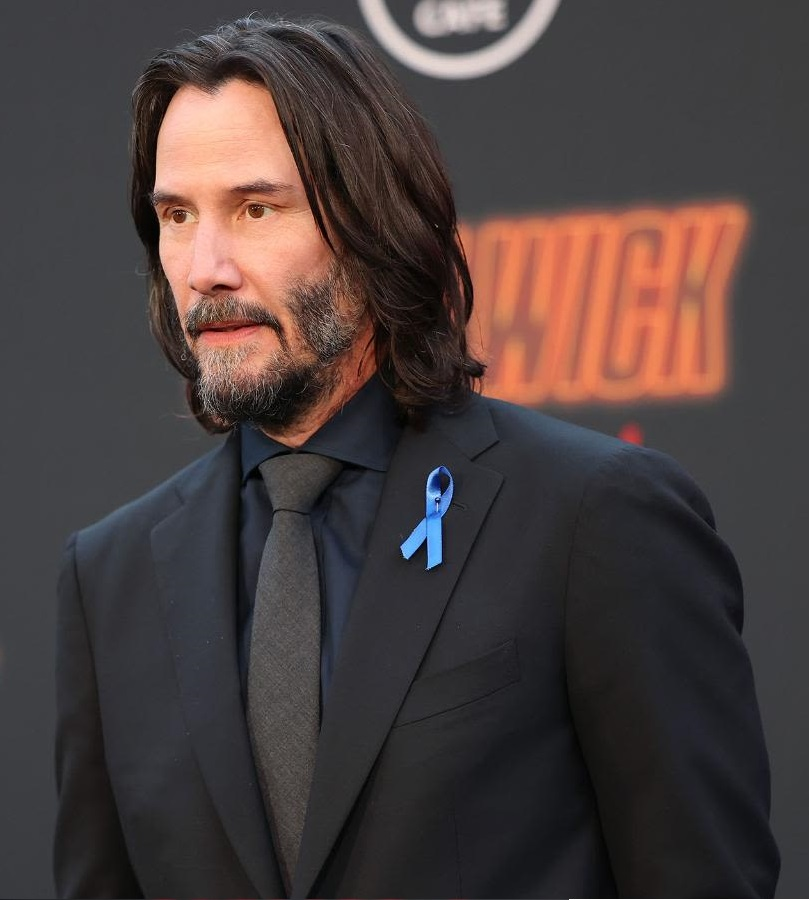
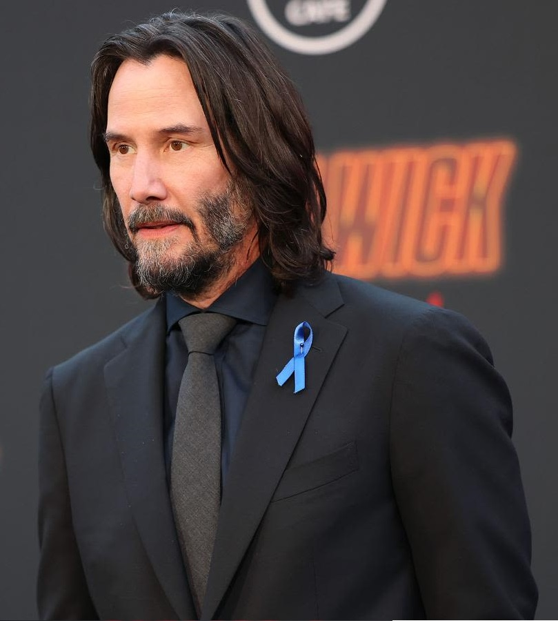

John Wick: Chapter 3 - Parabellum
John Wick: Chapter 3 - Parabellum continúa la historia justo después del final de la segunda entrega. Ahora, John está huyendo con una recompensa por su cabeza y sin acceso a los servicios del submundo criminal. Con una intensidad aún mayor, la película ofrece escenas de acción espectaculares y un desarrollo más profundo del universo de asesinos.
Estrenada en 2019, dirigida por Chad Stahelski y escrita por Derek Kolstad junto a otros guionistas. Esta entrega lleva a John a una lucha desesperada por sobrevivir mientras busca aliados en un mundo donde ya no puede confiar en nadie.
Esta película elevó la escala visual y de acción, con secuencias complejas y originales, como combates a caballo, con perros entrenados y coreografías aún más intensas. Keanu Reeves continuó consolidando su rol con una entrega física impresionante.
La historia transcurre en Nueva York, Marruecos y otros escenarios urbanos y desérticos. La variedad de locaciones enriquece la narrativa y expande aún más el universo de la franquicia, con nuevas facciones y reglas del Alto Mando.
Reparto
- Keanu Reeves (John Wick)
- Halle Berry (Sofia)
- Ian McShane (Winston)
- Laurence Fishburne (The Bowery King)
- Asia Kate Dillon (El Adjudicador)
- Lance Reddick (Charon)
- Mark Dacascos (Zero)
- Jerome Flynn (Berrada)
Producción y Estudio de Grabación
John Wick: Chapter 3 - Parabellum fue producida por Thunder Road Pictures y distribuida por Lionsgate. Chad Stahelski regresó como director, llevando la acción a un nuevo nivel tanto en escala como en complejidad técnica.
El entrenamiento de Keanu Reeves fue aún más riguroso, incluyendo combate a caballo, esgrima y coordinación con perros, junto a Halle Berry. Las escenas de acción se filmaron con una precisión milimétrica, destacándose por su creatividad y realismo.
Locaciones como el desierto marroquí y nuevos espacios dentro del Hotel Continental aportaron frescura visual. La dirección de arte y fotografía acentuaron el tono estilizado con luces neón y ambientaciones elegantes y misteriosas.
Curiosidades y premios
Uno de los aspectos más comentados de esta película fue la participación de Halle Berry, quien entrenó durante meses para interpretar a Sofia y coordinar escenas de combate junto a sus perros entrenados.
La película también explora la jerarquía del Alto Mando y profundiza el universo de reglas, favores y traiciones. Esto amplió significativamente la mitología de la saga y sentó las bases para futuras entregas.
Fue muy elogiada por la crítica por su ambición visual, la creatividad en las secuencias de acción y el compromiso físico de su elenco. Se convirtió rápidamente en una de las favoritas del público y reafirmó el estatus de culto de la franquicia.
 
